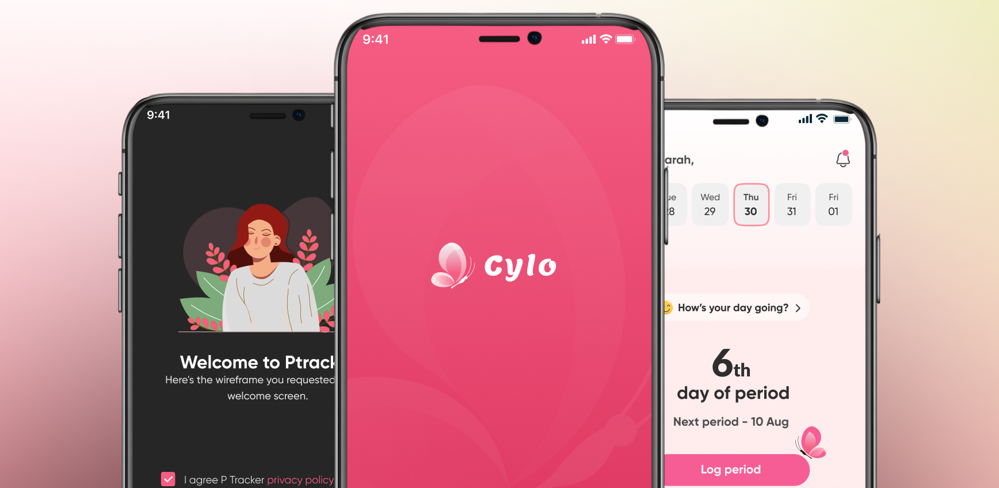
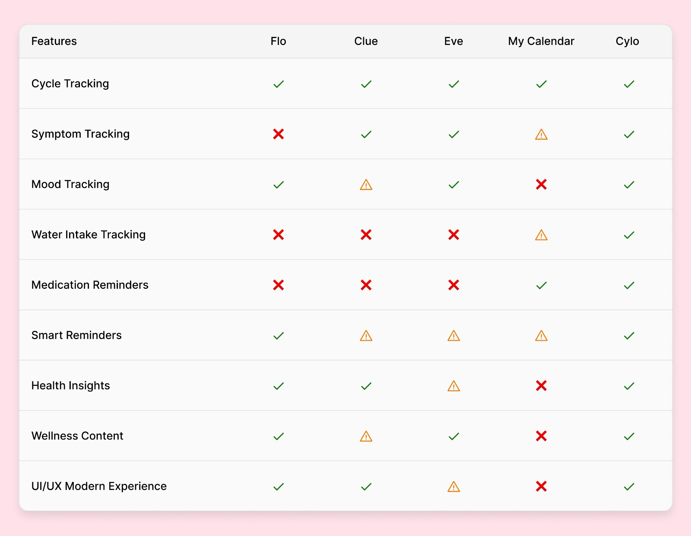
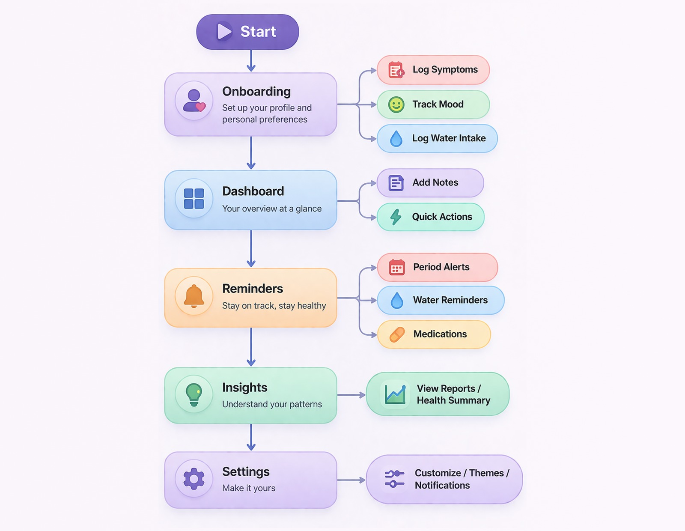

Cylo
A Smart Period & Wellness Tracking Experience
-
Role:
-
UX/UI Design
Product Strategy
Design System
-
Category:
-
Health & Wellness App
-
Timeline:
-
Case Study
-
Tools Used:
-
Figma
Prototyping
Role: UX/UI Design, Product Strategy, Design System
Category: Health & Wellness App
Timeline: Case Study
Tools Used: Figma, Prototyping
Project Overview
Cylo is a health and wellness application designed to simplify menstrual cycle tracking while supporting daily well-being through habits, reminders, and personalized insights.
The goal was to move beyond traditional period tracking apps by creating a holistic experience where users can manage their cycle, track symptoms, and build healthy routines all in one place.
Key Features
- 📅 Period and cycle tracking
- 🧠 Mood and symptom logging
- 💧 Water intake tracking
- ⏰ Smart reminders for period, medication, and hydration
- 📊 Health insights and reports
- 🧘 Wellness content including tips, yoga, and blogs
- 🎨 Customizable dashboard
- 🌙 Dark and light mode
Problem Statement
Managing menstrual health is often fragmented and inconsistent across existing applications.
Key Challenges
- Users struggle to track multiple aspects (cycle, mood, symptoms, hydration) in one place.
- Existing solutions are either:
- Too clinical and overwhelming
- Too basic with limited functionality
- High effort required for daily logging
- Reminder systems lack flexibility and context.
- Overloaded interfaces reduce engagement and consistency.
Opportunity
Design a calm, intuitive, and all-in-one wellness companion that:
- Reduces effort in daily tracking
- Combines health and habit tracking
- Provides meaningful and easy-to-understand insights
- Encourages consistent engagement through smart reminders
Goal
Design a simple, engaging, and intelligent wellness app that:
- centralizes health tracking
- improves consistency through reminders
- provides actionable insights
- creates a calm, non-intimidating user experience
Design Process
1. Research - Competitive Analysis
Analyzed apps such as:
- Flo
- Clue
- My Calendar

Insights
- Most apps focus only on cycle tracking.
- Habit tracking integration for water and medication is limited.
- Dashboard customization is weak.
- Many interfaces feel overloaded or outdated.
2. Define & Ideate - Key Ideas
- Create a modular dashboard.
- Reduce friction in logging through quick actions.
- Use visual indicators like colors, icons, and cycle patterns.
- Provide contextual reminders.
- Blend health and lifestyle content into one experience.
3. User Flow
Main flows:
- Onboarding to personalization
- Daily tracking to dashboard
- Add logs to insights
- Reminders to actions

4. Design & Prototype
Design System
- Primary color: soft pink for health and warmth
- Dark mode for comfort and accessibility
- Clean typography hierarchy
- Rounded components for a friendly feel

Key Screens
Onboarding and personalization:
Dashboard experience:
Calendar & Reminders:
Content & Insights:
Profile & Subscriptions:
Settings:
Prototype:
5. Testing
Usability Testing Goals
- Can users complete onboarding easily?
- Can users log data quickly?
- Do users understand dashboard insights?
Key Findings
- Users preferred quick logging through chips and buttons.
- Visual feedback was more effective than text-heavy data.
Improvements Made
- Reduced steps in input flows.
- Improved CTA visibility.
- Simplified navigation.
Documentation & Reflection
Documentation
- Component system created
- Reusable UI elements
- Developer handoff-ready screens
Reflection
What Worked
- Clean UI improved engagement.
- Modular dashboard increased flexibility.
- Reminder system supported habit building.
What Could Improve
- More personalization using AI
- Deeper analytics
- Social and community features
Cylo Web Platform
Cylo extends beyond mobile to deliver a seamless experience across web platforms, allowing users to access health insights anytime, anywhere.
The web experience maintains consistency with the mobile app while adapting to larger screens for improved readability, data visualization, and ease of navigation.
Users can effortlessly track their cycle, monitor wellness activities, and explore personalized insights through a clean and intuitive interface.
Designed to provide a unified health tracking experience across devices.
Final Result
Cylo offers a smooth, engaging, and comprehensive approach to menstrual and wellness tracking by integrating cycle data, habits, and personalized insights into one seamless experience.